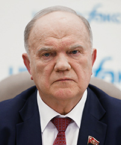

Председатель КПРФ с 1993 года.
Оппозиция, которая никогда не оппонирует.

26 июня 1944 года в деревне Мымрино Орловской области. Военное детство, колхозный уклад, советская школа. Отличник, комсомолец. Окончил педагогический институт, затем аспирантуру. Путь типичного советского карьериста через партию.
Вступает в Коммунистическую партию Советского Союза. Последовательно строит карьеру: комсомол, партийная работа в Орле, переезд в Москву. К концу 80-х — уже в аппарате ЦК КПСС. Зюганов — убеждённый коммунист, это отличает его от большинства кремлёвских чиновников.
Распад Советского Союза уничтожает КПСС. Зюганов участвует в создании новых левых движений. В 1993 году становится лидером возрождённой КПРФ — Коммунистической партии Российской Федерации. В стране хаос и тоска по стабильности. КПРФ набирает миллионы голосов.
КПРФ на парламентских выборах 1995 года — первая партия в Думе. На президентских выборах 1996 года Зюганов выходит во второй тур против Ельцина. Многие аналитики считают, что реально Зюганов выиграл — но результат был сфальсифицирован при поддержке олигархов и западных советников. Зюганов признал поражение. Это решение осталось с ним навсегда. Интерпр.
На президентских выборах 2000 года КПРФ снова участвует — и снова проигрывает. Зюганов постепенно принимает роль системного игрока: партия критикует власть риторически, но не угрожает ей реально. КПРФ голосует за ключевые законы Кремля, когда это нужно. Факт
Зюганов публично поддерживает аннексию Крыма. «Возвращение Крыма — историческая справедливость», — говорит он. КПРФ голосует за все соответствующие законы в Думе. Коммунист-националист — это не противоречие в логике Зюганова: СССР = великая держава, её территории должны быть возвращены.
После 24 февраля Зюганов называет вторжение в Украину «вынужденной мерой» в ответ на агрессию НАТО. КПРФ не голосует против военных законов. Несмотря на это — никаких западных санкций. Это само по себе характеристика: система не считает Зюганова достаточно опасным, чтобы наказывать. Факт
В 2024 году Зюганову исполнилось 80 лет. Он по-прежнему руководит КПРФ. Ни одной реальной угрозы власти за три десятилетия. КПРФ — крупнейшая оппозиционная партия, которая не является оппозицией. Зюганов — главный символ того, чем является «системная оппозиция» в России. Интерпр.
Зюганов говорит много — и предсказуемо. Его риторика — смесь советской ностальгии, антизападничества и государственного патриотизма. Эта смесь идеально вписывается в кремлёвский нарратив.
КПРФ критикует власть — за коррупцию, за бедность, за западное влияние. Но никогда не ставит под сомнение сам режим. Это позволяет системе иметь «оппозицию» для видимости и одновременно сохранять монополию на власть.
На ключевых голосованиях — войны, репрессивные законы, конституционные изменения — КПРФ либо поддерживает власть, либо воздерживается. Реального блокирования не было ни разу. Партия является функциональной частью парламентского большинства.
Зюганов принимает голоса избирателей, которые недовольны властью, но ещё не готовы голосовать за реальную оппозицию. Эти голоса «утилизируются» в безопасном для Кремля канале. КПРФ фактически обезвреживает протестный электорат.
За 30 лет Зюганов сохранил пост, парламентские привилегии, государственное финансирование партии и доступ к федеральному телевидению. Реальная оппозиция в России теряет всё это — и свободу. Выбор Зюганова очевиден и последователен.
«КПРФ — это не оппозиция. Это декорация. Зюганов позволяет системе говорить: смотрите, у нас есть коммунисты, у нас есть плюрализм. При этом они никогда ничего не меняют.»
«В 1996 году он, возможно, выиграл президентские выборы — и не взял власть. С тех пор он стал украшением системы, которая, судя по всему, ему и нравится.»
«Показательно, что против Зюганова нет западных санкций. Запад тоже понимает: он не угроза. Он часть системы, которая воюет против Украины, — но безопасная её часть.»
Все утверждения основаны на открытых публичных источниках. Факт — прямые первичные источники. Интерпр. — авторская интерпретация.